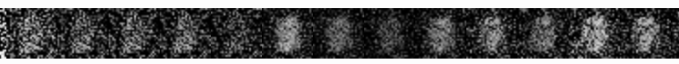
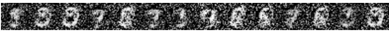
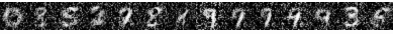

<!--<h2>{{title}}</h2>
<h4>Enter the X value:
<input name="xValue" type="number" step="1.0" min="0" (change)="predict($event.target.value)">
</h4>
<h4>Predicted Y value: <span>{{ prediction }}</span></h4>
<p>The X training data: {{xData}}</p>
<p>The Y training data: {{yData}}</p>-->
<style>
body {
  height: 100%;
  padding: 0;
  margin: 0;
  font-family: Tahoma, Verdana;
  font-size: 14px;
  display: flex;
  justify-content: center;
  background: #DDD;
}

section {
  background: #FDFDFD;
  margin: 0 4rem;
  padding: 0 2rem;
  flex-grow: 0;
}

button {
  font-size: 100%;
  margin: 5px;
}

</style>
<section>
  <h4>Simple MNIST GAN using TensorflowJS</h4>
  <p>
  Hand-written digit generation using Generative Adversarial Network. A simple TensorflowJS implementation
  that clocks in at less than 100 lines of code.

  </p>
  <table style="margin-left:20px">
    <tr>
      <td>Early stages:</td>
      <td></td>
    </tr>
    <tr>
      <td>Getting better:</td>
      <td></td>
    </tr>
    <tr>
      <td>Later still:</td>
      <td></td>
    </tr>
  </table>

  <p>
  Click <strong>Train</strong> to train for (an additional) 5) epochs. Click <strong>Load weights</strong> to restore 
  pre-trained weights for the <em>Generator</em>. Click <strong>Sample image</strong> to generate a sample output using the current weights. 
  The network should start to converge after 15-20 epochs.
  </p>
  <button id="train" (click)="train()">Train</button>
  <button (click)="loadCachedModel()">Load weights</button>
  <button (click)="sampleImage()">Sample image</button>
  <br>
  <p id="load-status"><br>Loading resources...this may take a few seconds<br></p>
  <br>
  <br>
  <div id="samples-container"></div>
  <br>
</section>